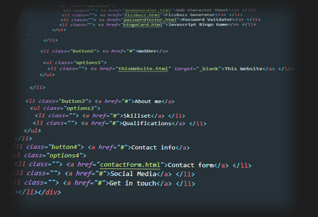
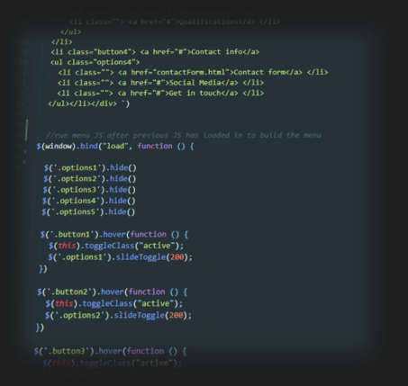

|  |
AyaPKThe site you are currently viewingJavascript based Main MenuThe menu for the website is powered by two main JS components. |
Why I chose this methodMaking the header like this has allowed me to maintain |

|